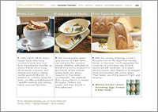
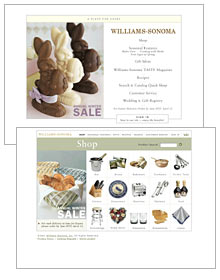

|
|
 |
|
Tim Kain, creative director;
Laurie Davison Kanes/Cathy Muma/
Katherine Doumani/
C.J. Bradford/
Laura Bruder/Julie Montgomery,
Williams-Sonoma, Internet
creative services team;
George Humpreys/Roy
Sablosky, art directors;
Brian Friezen, interface designer;
Daniel Stephens/Ed
Storm, programmers;
Laura Martin-Bacon/
Jackie Mallorca/
John Carroll, writers;
Kris Balloun/Don
Roberts, editors;
Quentin Bacon/Bob Barclay/
Paul Berg/
Susan Burdick/
Jim Hildreth/Ken
Smith,
photographers;
Paul Miller/Jude Brown/
Brooke Dubray/
Julie Connolly,
Williams-Sonoma, Internet
business team;
marchFIRST, site design
and development;
Williams-Sonoma Inc., client
|
|
“Beyond the gorgeous photography is expert interactive art direction. This site is tasteful-and just plain tasty.” —Laura Kampo
“A flawless translation of the catalog shopping environment and a perfect example of interpreting a well-known shopping experience and æsthetic for the Web.” —Gregg Heard
The design for the Williams-Sonoma site was inspired from the catalog and store experiences. The result is a user-friendly and graceful approach to e-commerce. The site has a simple, clear interface of beautiful photographs, easy-to-read graphics and navigation alternatives for different shopping styles. It’s hard to improve on a site that’s so accurately branded and well-designed. But a number of additional commerce features, added this year, allow people to track purchases, receive advance notice of products and sales, obtain personalized recipes and product information based on past purchases and eliminate the need to enter a charge card number each visit.
|
“During this past year, our goal for the site was to present the same seasonal merchandise to our customers that’s in the stores and the catalog. We also wanted to offer, whenever possible, an in-depth product assortment, more product information and ideas for entertaining.
“Because the concept is to have as much coordination as possible between the three selling channels, there are times when the site has more content. During Thanksgiving the site included multiple menu choices, including a traditional Thanksgiving meal, recipes from New England inns and a Southern Thanksgiving menu. We also offered a comprehensive checklist and timeline, tips on how to roast and carve a turkey and pointers on table settings and garnishing soups. Rather than trying to fit heavily-edited versions of all of this information into our catalog, we printed urls in the catalog that linked customers to corresponding site content.”
“Creating and loading this much customized, seasonal content online required that we make the site as easy to maintain as possible. The marchFIRST and Williams-Sonoma technical teams worked closely to integrate a content management tool, developed by Spectra, that allowed the in-house creative team at Williams-Sonoma to swap-out images and copy.
“The site’s entire recipe section was built and maintained using this in-house system. It’s supported by a content manager who acquires and develops content, a production assistant who enters images and copy into customized database fields and an e-commerce technical developer who pushes the builds live to the site. Williams-Sonoma now has the flexibility to update the site on a weekly basis without having too heavy a reliance on an outside supplier to make every little change.
“For the Holiday 2001 build, Williams-Sonoma will be using the content management tool to help build and maintain some of the site’s commerce areas. The more the internal creative team is able to develop and maintain the site, the more creative control they have in presenting a unified brand experience to our customers.”
—Tim Kain/Laurie Davison Kanes
|